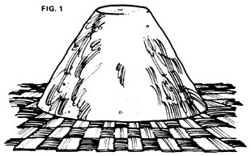

The common soybean-if there is such a thing, considering the number of present varieties-needs no introduction. Everyone knows the useful crop that feeds our livestock and yields an oil which is utilized in a wide range of chemical processes. Most of us know, too, that this legume is far higher in protein than most plant products, yet lower on the food chain than the animals from which we've traditionally obtained most of our protein supply. It's this fact that has allowed the survival of large populations in many Oriental countries . . . and, with meat prices and shortages what they are nowadays, the soybean may soon be equally important in the West.
Not everyone, though, appreciates the taste of plain boiled soybeans. (And they shouldn't be eaten in that form anyhow, according to Beatrice Trum Hunter's advice in LIFESTYLE! NO. 8. Soybeans are valuable in the Oriental diet because they're first subjected to various processes-especially fermentation-to make them digestible. Mrs. Hunter also warns that the protein in beans is not complete and can't be considered a total meat substitute. -MOTHER.) While many cookbooks offer recipes to make this food palatable, none that I've seen includes directions for the various bean products made and used in the Far East.
It's true that some of the traditional Eastern methods take a great deal of time and a certain amount of labor . . . but the procedures are less complicated than many people think. Otherwise, soy products could not have been manufactured over untold years by hundreds of thousands of Oriental women using only the most primitive techniques.
My own research and practical experience with soybean products-in connection with a book I'm writing-have convinced me that only a few basics are needed to make such foods at home: a substantial number of soybeans, a few com mon kitchen utensils, plenty of patience (especially that!) and a taste for these unique Oriental delicacies.
Let's start with the soy sauce recipe, the most complex of all. Perhaps the best brief description of the basic chemical process involved was given by a traveler named Bishop, who visited Korea between 1894 and 1897. He wrote, "Oil of sesamum is largely used in cooking, as well as vinegar, soy, and other sauces of pungent and objectionable odors, the basis of most of them being capsicums and fermented rotten beans!" If the idea of obtaining a condiment from "fermented rotten beans" doesn't bother you, however, we can proceed to the directions.
In Bishop's time, Koreans made soy sauce in the fall after the harvesting of the dried soybeans. These were first thoroughly cooked by boiling and then, while still hot and wet, immediately pounded in a mortar to a fine mash. The pulp was placed in the center of a large wooden bowl and formed by hand into a truncated cone (see Fig. I ) measuring eight or ten inches high by a foot in diameter. This object, called mei-ju, was placed on a mat of rice straw in a special chamber known as the "paper floor room". Here the cones dried to a fairly hard consistency, and each was then wrapped in two bunches of rice straw-crossed at the top-and hung from the ceiling of the same room for several weeks while fermentation got under way, Once the process was well begun, each mei-ju was taken down and stored in a large bag over the winter (in a warm room but away from the fire).
Come spring, the Korean woman broke the cones into several pieces and put the chunks into a large earthenware jar. This vessel was filled with water to which the cook added a given quantity of salt, a number of whole red peppers (capsicums) and a few lumps of charcoal. The pot was then set in the sun for several days while the contents ripened further. During this period the water blackened and pieces of moldy soybean cone came to the top. Finally, the liquid in the jar was carefully ladled out and boiled, with the scum (coagulated protein) being removed as the cooking proceeded. When sufficiently concentrated, the sauce was cooled and stored.
This operation is primitive but effective. I do, however, suggest a few alterations for MOTHER'S readers . . . not in method but in technique.
[1] First, it's hard work pounding enough soybeans into mash to make cones for a large amount of soy sauce. I prefer to run the beans through a hand-operated meat grinder with extremely fine cutters. All the juice should be retained along with the pulp . . . any excess liquid will leach out of the cone during its initial rest on the matting.
[2] If rice straw mats aren't available (and you'd be surprised just how scarce such items are here in southern Illinois), substitutes can be made from cattail leaves . . . or the drying cones can simply be set upon screen-wire frames (either old window screens or fruit-drying racks) covered with white towels.
[3] Strips of unbleached muslin two feet long by six or eight inches wide will serve to hang the dried cones (see Fig. 2). The cloth ties should be laid on a table in the shape of a cross and the mass of beans centered on the conjunction. The ends of each strip are knotted together and the package is hung by an open eve hook screwed into a rafter of, say, a warm smokehouse. The cones can later be packed in an unbleached muslin or cotton bag and suspended in any warm room or building over the winter. (This form of storage prevents damage by mice or insects.)
[4] Finally, the seasoning: If you have no hankering for red peppers, leave them out. Add salt to suit your taste, of course, and don't forget the all-important charcoal . . . a substance well known for its ability to absorb impurities in liquids and gases. Use the activated form found at chemical supply houses or at outlets for water treatment products. Also, I've discovered that just a hint of garlic added to the boiling liquid contributes immeasurably to the final result.
OK, you've got your homebrew soy sauce cooled and bottled. Now, you say, it's time to get rid of that black mess in the bottom of the earthenware jar. Don't! That dubious-looking sludge is the basis of another valuable Korean food called toin-chang (soybean mash) which Westerners can prepare by simply dehydrating the residue on pizza pans or cookie sheets . . . either in the sun or in an oven set at 100° F. This condiment is unsurpassed in Oriental dishes, and can also be sprinkled over cool summer salads, added to their dressing or included in soups and stews for an unusual, zesty flavor.
In the Orient, the soybean has many uses other than as the basis for soy sauce and its by-product. One well-known example is the Japanese tofu , or bean curd. Tu-bu, the Korean equivalent, is made in the following manner: A quantity of soybeans (two to four cups, depending on how much bean curd is desired) is soaked overnight and cooked thoroughly in the same water. The legumes can then be ground or pounded as described above, but a large amount of water must be worked in (I add twice as much fluid as my volume of beans). The resulting liquid is strained through a cloth, preferably unbleached muslin.
I'm told that the Koreans thicken tu-bu with a special agent derived from sea water, but a good substitute is rennet added to the juice in the proportion of one tablet (soaked in warm water) to one quart of liquid. The fluid is then poured off and the remaining bean curd-the curdled protein-is pressed into very tender, soft cakes.
In Korea, this food is usually added to soups or stews, or cooked into omelettes along with the eggs. An interesting dish called tu-bu-chorim is made by cooking the bean curd in soy sauce for a short time and serving it with sesame oil, pepper and onions. Delicious! Or you can simply dip your tu-bu into soy sauce and eat it with no further preparation.
Kong-cha-ban, another Korean dish, consists of soybeans boiled in soy sauce. They don't swell as when cooked in plain water, but become hard and brittle and very salty in flavor. Sugar and sesame oil are added at serving time.
One more interesting condiment used in Korean cooking is akin to our roasted soybeans but is prepared without presoaking. The cook merely burns the hard, dry beans in the bottom of an iron pot . . . as if parching grain or flour, but at a more extreme temperature. The heat causes the beans to jump like popcorn. When done-and this is a matter of taste and experience-the blackened morsels are removed and ground into a coarse powder. The finer, flour-like material is sieved out and used to flavor rice cakes or top plain rice, and the remaining crunchy bits are relished by children.
Any article on the uses of soybeans, however incomplete, should certainly include some directions for germinating the seeds. Although many people prefer mung beans for this purpose, I've found that the soybean sprout-if not allowed to grow too long-is also delicious and very high in nutritional value.
The Korean woman prepares beans for sprouting by picking out those which have been damaged by worms and washing the good ones in a jar with fresh water. She then pours off the cleansing liquid, adds more water and a few rice straws and sets the container in a warm place. Each day the seeds are rinsed and clean water poured over them. In a week or so, the tendrils-by that time about four inches long-are separated from the beans and made into soup or pickled.
A pickled bean sprout, incidentally, is a thing of delight. To prepare this delicacy, fill a small jar with sprouts and add real apple cider vinegar (accept no substitute!), a little cut of garlic, some dill and water enough to cut the taste of the acid to acceptable limits. If the vinegar is homemade, it can be diluted to a tenth of its strength and still be as sharp as anyone could like it. Then wait a few days. The finished products can be eaten raw or added to salad, soups or stews, I've even mixed them into stuffing for roast chicken or turkey.
I realize that I haven't specified quantities in most of these recipes, but you'll find that you can make any of the foods and condiments I've described on the basis of your own preferences. And-as I said at the outset-none requires complicated equipment or processing, The bean, once activated by cooking, will pretty well take care of the necessary chemical changes with a minimum of interference from the cook.
Actually, fermentation of the soybean is all too easy. Many times I've discovered the remains of a big pot of boiled beans quietly working away at the back of the refrigerator. Such leftovers needn't be wasted, or even buried in the garden or compost heap or fed to the livestock. Instead, they can be reheated, mixed with more well-cooked beans and made into soy-producing cones. The residue from saucemaking, of course, becomes toin-chang . . . and the moldy pieces of cone and coagulated protein are perfectly good fertilizer. Nothing is left that isn't usable, yet the whole operation-unlike commercial manufacturing processes-takes very little energy.
So you want homemade soybean products. . low-cost, nutritious foods made from ingredients you know to be natural and wholesome? OK, go ahead!
(Note: See the "Dear Mother" section of this issue for further information on soy products.)
|
A truncated cone of pounded soybeans?eight or ten inches high by a foot in diameter?begins its period of fermentation on a homemade mat of cattail leaves. |
 The cone is later hung from a hook by knotted strips of unbleached muslin. |
|